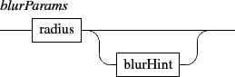

Next: 5. The 'get' messages
Up: 4. The 'set' message
Previous: 4.1 Inline components
Contents
Index
4.2 File based components

- txtf: a textual component defined by a file.
- htmlf: an html component defined by an HTML file.
- gmnf: a Guido score defined by a GMN file.
- svgf: vectorial graphics defined by a SVG file.
- img: an image file based component. The image format is infered from the file extension.
- video: a video file based component. The video format is infered from the file extension. Note that navigation through the video is made using its date.
- file: a generic type to handle file based objects. Actually, the file type is translated into a one of the txtf, gmnf, img or video types, according to the file extension (see table 4.1).
See also: the application rootPath message (section 7 p.![[*]](crossref.gif) ) for file based objects.
) for file based objects.
EXAMPLE
Creating an image.
|
/ITL/scene/myObject set img "myImage.png"
|
Using the file type.
/ITL/scene/myObject set file "myImage.png"
will be translated into
/ITL/scene/myObject set img "myImage.png"
|
Table 4.1:
File extensions supported by the file translation scheme.
| file extension |
translated type |
| .txt .text |
txtf |
| .htm .html |
htmlf |
| .gmn .xml |
gmnf |
| .svg |
svgf |
| .jpg .jpeg .png .gif .bmp .tiff |
img |
| .avi .wmv .mpg .mpeg .mp4 |
video |
Next: 5. The 'get' messages
Up: 4. The 'set' message
Previous: 4.1 Inline components
Contents
Index
Grame - INScore project